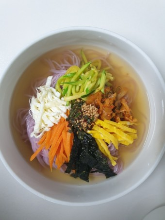

자취생을 위한 음식 레시피
홈
레시피
뒤로가기
잔치국수

재료
(1인분 기준 / *로 표기되어 있는 것은 필수 재료)
소면 1인분 *
멸치육수 *
애호박
계란
당근
김치
김
1. 소면을 삶는다. 면이 익으면 찬물에 행군다.
2. 계란을 흰자, 노른자 분리 시켜 지단을 만든다.
3. 채썬 애호박, 당근, 김치를 따로 볶는다.
4. 끓인 멸치 육수에 삶은 소면을 넣고 준비한 고명을 취향에 맞게 올린다.
5. 마무리로 김을 올린다.
6. 맛있게 먹는다.